| 基礎からのベイズ統計学 |
| 基礎からのベイズ統計学 |
満たしているべき条件
稀少性：同時に２回以上起こらない
独立性：事象の生起は過去の事象に依存しない
定常性：単位時間内の平均観測数は常に一定
2つの母数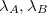を比較する。 生成量
| 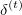 | 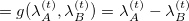 | (7.3) | ||
| 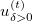 | 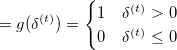 | (7.4) |
を算出すると、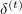の95%確信区間によって母数の差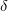に関する推測を1、の平均によって仮説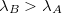が正しい確率の評価を行うことができる。
ポアソン分布に従う確率事象が初めて観測されるまでの時間が従う分布。
| 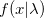 |  |
(7.7) | ||
| 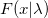 | 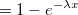 | (7.8) |
独立に指数分布に従う 個の確率変数の和を表す分布。 つまり、個のポアソン事象が発生するまでにかかる合計時間の分布。
個の確率変数の和を表す分布。 つまり、個のポアソン事象が発生するまでにかかる合計時間の分布。
単位時間当たりの観測個数がデータとして得られているとき、次に個観測するまでの時間は？
母数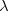のポアソン分布（観測機会 回）
回）
データからの事後分布を算出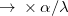の事後分布（ 待ち時間の平均事後分布）
データからの事後分布を算出 個観測するまでの時間をガンマ分布に従って発生させ、その分布を算出（待ち時間の事後予測分布）
個観測するまでの時間をガンマ分布に従って発生させ、その分布を算出（待ち時間の事後予測分布）
テキストでは、本文では後者、stanスクリプトでは前者の方法を採っている2。
母数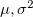の対数正規分布に従う確率変数 の対数を取ったもの
の対数を取ったもの は、母数の正規分布に従う。預金額や収入の分布としてよく用いられる。
は、母数の正規分布に従う。預金額や収入の分布としてよく用いられる。
Footnotes
| 基礎からのベイズ統計学 |